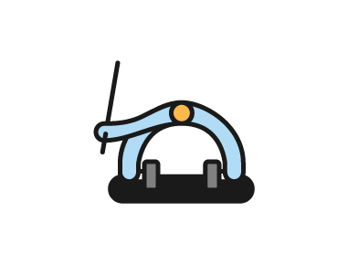
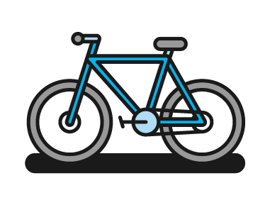
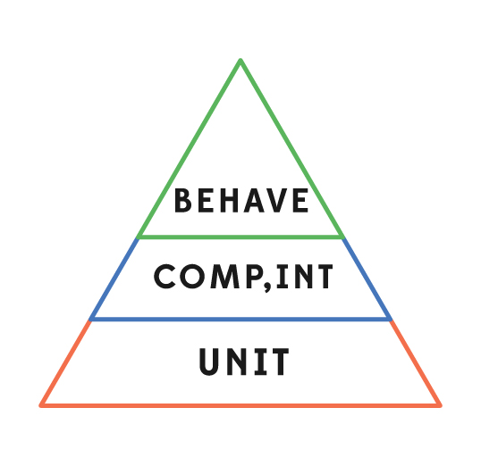

The testing world is pretty big. We want you to know where we sit. There’s a lot of confusion around testing so here’s a (2 minute read) primer:
Know that this is?
Its a brake release spring from a bike. Its small but pretty important because it releases your brake when you release the lever. You could say its a unit because it has no smaller parts. Its not dependent on any other parts and its easily tested in isolation: put under tension 'x' and release.
Unit tests verify individual components of a complex system. A unit can be tested independently of the other parts of that system. These tests are cool because they let us know whether each of the the small parts of a system work in isolation. Unit tests are best written by developers because they are close to the code. The tests can be run quickly and efficiently by computers so its good to have loads of them.
Unit test Pass -> We know the small parts work in isolation
Unit test Fail -> We know which small parts have failed. We can fix them and run again.
This is a brake from that bike. The spring above is part of this brake, but the brake has a lot of other small parts too. A brake is a component of a bike.
Any given system has lots of components. There’ll likely be components within components, and there will certainly be joining of components. These‘ll need testing and so will the interfaces between them. You’ll likely also hear these referred to as functional tests. Integration tests are component tests involving interfaces. We might test this component works by squeezing and releasing the brake lever and checking the brake closes and opens.
Component tests are unsatisfactory in isolation because they neither tell you the whole system works or where exactly something one wrong. Unit and component tests come from the inside-out. Driven by knowledge of how the system is built.
Component test pass -> This component works, but what about its interfaces between components?
Component test fail -> Which part of component failed? Lets go back and check the unit tests
Here is a system. In our case its a bike.
What will a user of this system care about when they want to use it? They'll care about what it does (its behaviours) rather than the parts its made from. Everybody knows what a bike should do - you don’t need be a bike mechanic!
This is where behavioural testing comes in. We don’t even need to outline the ways you would test the bike because you know them already.
Behavioural (aka black-box) testing is outside-in. This general type of test doesn’t need (or want) knowledge of how the system is built
Input -> System -> Output
..like getting in a car and verifying that it drives forward, with no concern for whats under the bonnet

These automated black-box acceptance tests. We call these tests behavioural because they are produced from a BDD (behaviour-driven-development aka specification by example) process.
The purpose of such tests comes not from independence but from inter-dependence of parts working together. Behavioural tests check the functional contract by exercising the system holistically. If the contract is broken we look (inside) at lower level tests.
Behavioural test pass -> This behaviour is as we want it
Behavioural test fail ->
Some may discuss whether to have unit and component tests OR behavioural tests [TDD vs BDD]. This is a misguided notion and you need both. They cover completely different aspects and complement each other beautifully!
Relative # of tests heuristic ->
After all that about testing. Please take a look at the SPEC page to discover why we think the tests are not the most important thing..